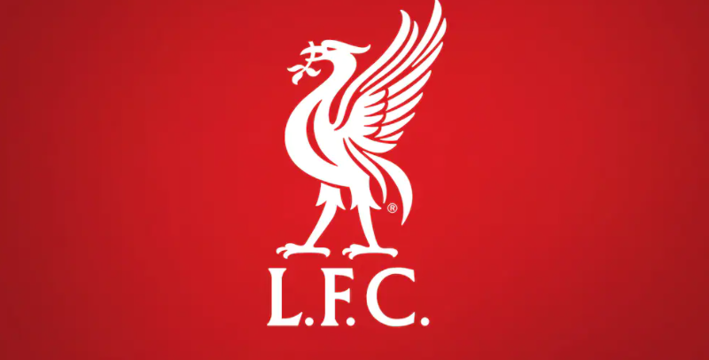
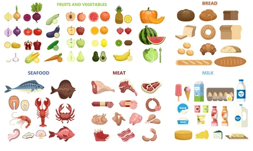

Post 1:

I wanted to use this space to talk about the best team, in my opinion, in professional football, Liverpool
Football Club. The club plays out of Liverpool England and participates in the English Premiere League. The team
consists of many different players, with the most notable names being Mohammad Salah, Sadio Mane, Virgil van
Dijk, and Allisson Becker. The club’s coach is one of the best in the world, Jurgen Klopp, who made his first
big team debut with a club in Germany that goes by the name Borussia Dortmund. The club has a long-standing
history of being a competitive force to be reckoned with, housing stars across history such as Steven Gerrard.
The club’s motto is “You’ll never walk alone” which goes back to a terrible event back in 1989 known as the
Hillsborough disaster. During a match against Nottingham Forest football club, there was a mass overcrowding of
fans at the stadium in which security at the stadium ordered a gate to be opened. Due to this, a massive influx
of people rushed into the stadium, pushing others over in the path, causing nearly one hundred fans to lose
their lives. Liverpool Football Club adopted the song “You’ll never walk alone” as their main motto in
remembrance of the fans who lost their lives.
Post 2:

One of my all-time favorite pass times must be cooking. I find it to be one of my favorite hobbies. It is not a
pass time which I can pour everything into unfortunately, due to the amount of concentration and time that it
takes, but when I have the time and energy to do it I always try to seize the opportunity. I love the different
tastes and creations that you can make by combining different proteins, spices, broths, and vegetables. One of
my favorite dishes to make is Honey Walnut Shrimp, where you first take the shrimp and dethaw it and then detail
it. Then I place a few cups of oil into a wok and let the oil come to a temperature where I could fry the shrimp
at. While I let the wok heat up I toss the shrimp in a mixture of salt, pepper, and cornstarch that gives the
shrimp a little bit of a fluffy breading when it comes out of the frier. When the wok is finally heated up, I
pour about half of the shrimp into the oil and let them fry, occasionally moving them around until they are
done. In between the waiting periods I make a sauce consisting of honey, mayo, brown sugar, a little sesame oil,
condensed milk, and crushed walnuts. Once the shrimp are done, I let them cool for a few minutes and then toss
them in the sauce mixture, giving them an even coating. I repeat this process for the second batch of shrimp as
well. Typically, I serve the shrimp with a white rice. All done and delicious!
| Step Number |
Ingredients at step |
| 1 |
Shrimp To Dethaw |
| 2 |
Vegtable Oil |
| 3 |
Salt, Pepper, Cornstarch |
| 4 |
Honey, Mayo, Sesame Oil, Brown Sugar, Conensed Milk, Walnuts |
| 5 |
Rice |